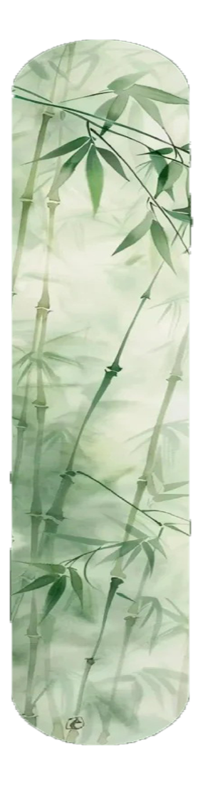
Bamboo weaving craft originated in ancient China, as early as the Spring and Autumn and Warring States periods, bamboo baskets, bamboo chairs and other bamboo products have begun to become popular. In the Tang Dynasty, bamboo weaving was even more prosperous, and was widely used in national palaces, mansions, temples and other buildings, becoming a popular art form in the society at that time.
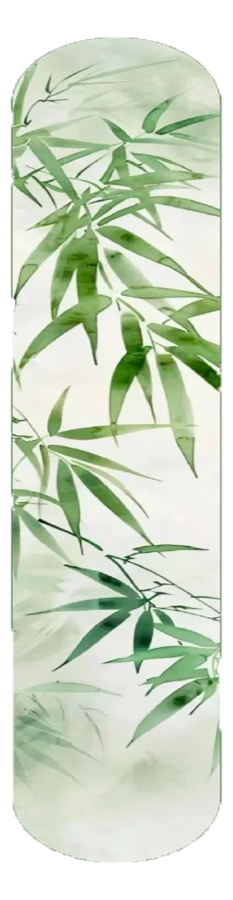
The production process of bamboo weaving is very complicated and requires a number of procedures, including choosing the right bamboo, smoking treatment, cutting, polishing, assembling, bundling, etc., each step of which requires skill and patience. There is a wide variety of bamboo weaving works, ranging from daily necessities to decorative items, such as bamboo baskets, bamboo hats, bamboo chairs and other practical items, as well as decorative items such as bamboo birdcages and bamboo playhouses, all of which are classic representations of bamboo weaving production. These works can not only be used in daily life, but can also be appreciated and admired as art collections.
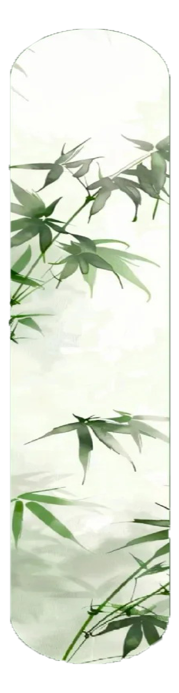
Bamboo weaving is not only a handicraft art, but also carries the memory of civilization and historical inheritance, and is an important part of traditional Chinese culture. It embodies people's reverence for nature and pursuit of life. Bamboo weaving works have a natural beauty, because bamboo is exactly the pure and pollution-free existence in nature. Besides at home, bamboo weaving has also received wide international attention, and many countries and regions have protected and studied the bamboo weaving heritage, making it an important messenger of Chinese culture, spreading Chinese wisdom and creativity to the world.
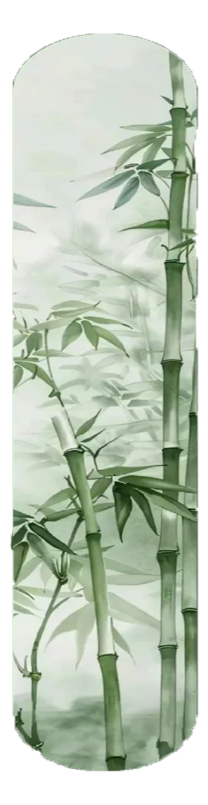
On June 7, 2008, bamboo weaving was approved by the State Council to be included in the second batch of national intangible cultural heritage list, which marked the official recognition and protection of bamboo weaving's important position in Chinese traditional culture. Governments at all levels and academic institutions have stepped up their efforts to study and promote bamboo weaving, in the hope of passing on and carrying forward this ancient handicraft. At the same time, young people are also encouraged to participate in the production of bamboo weaving, so as to inject new vitality and creativity into the craft and give it a new luster in contemporary society.
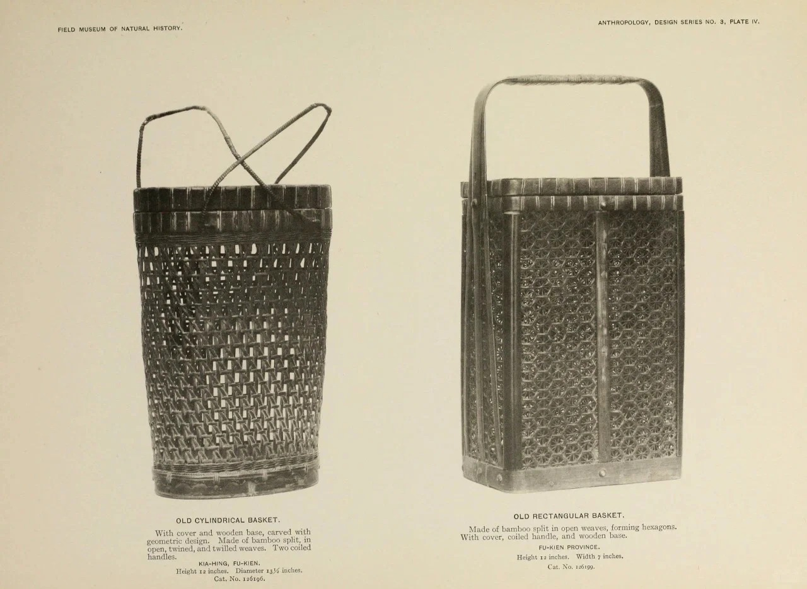
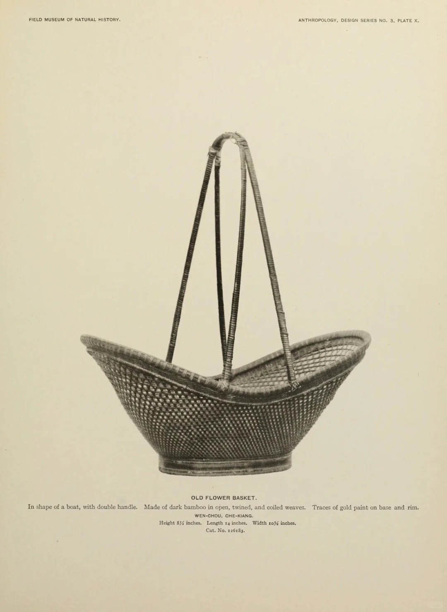
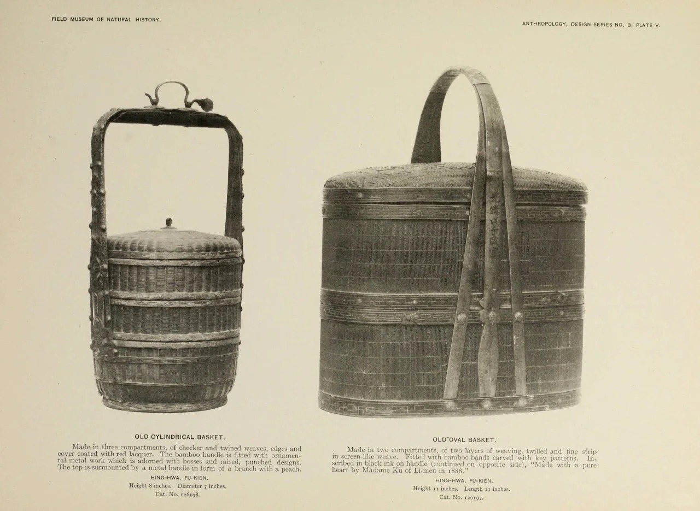
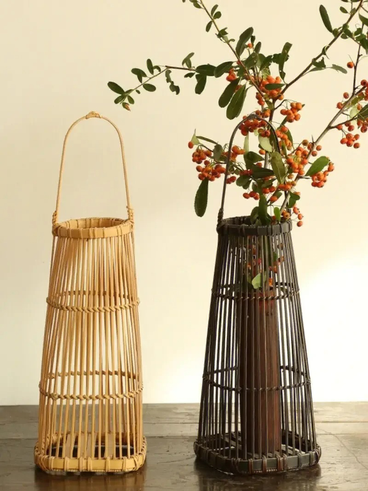
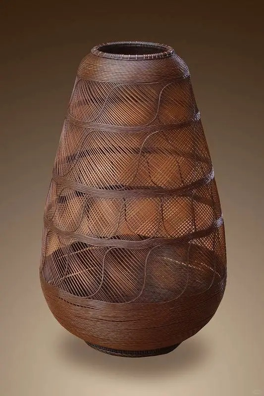
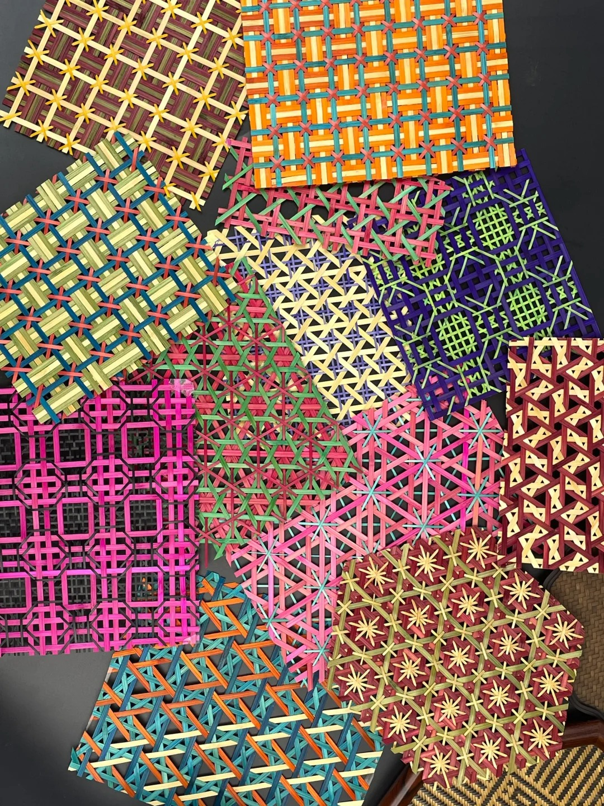
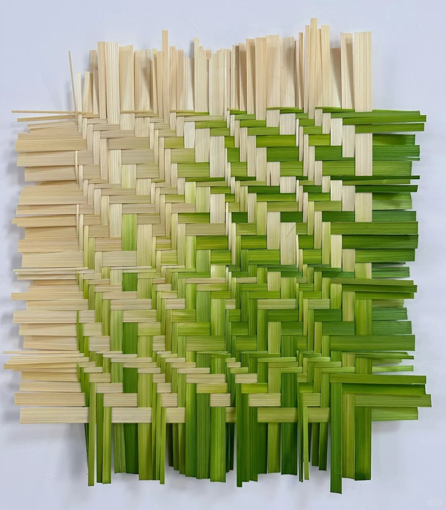
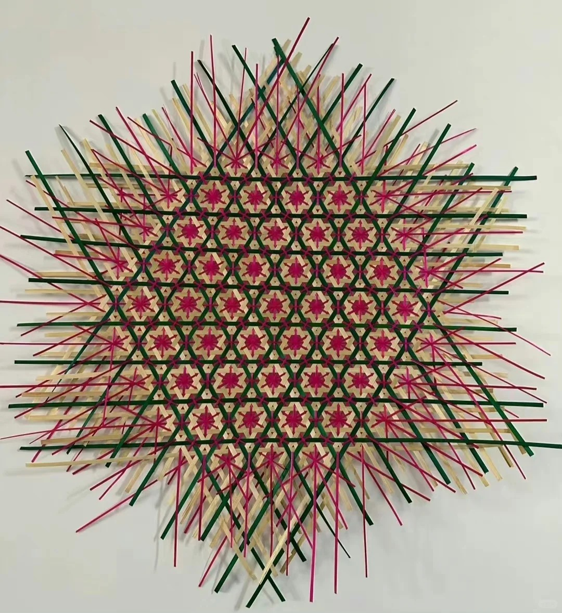
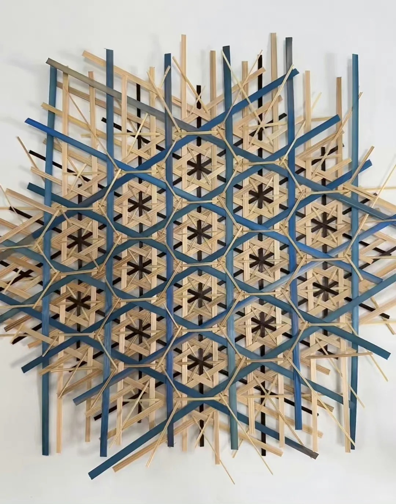